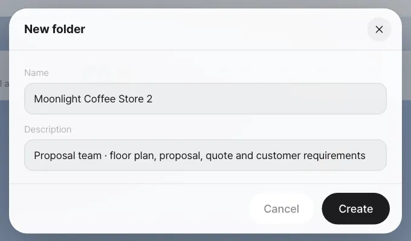
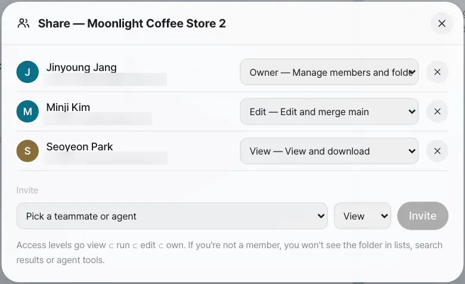
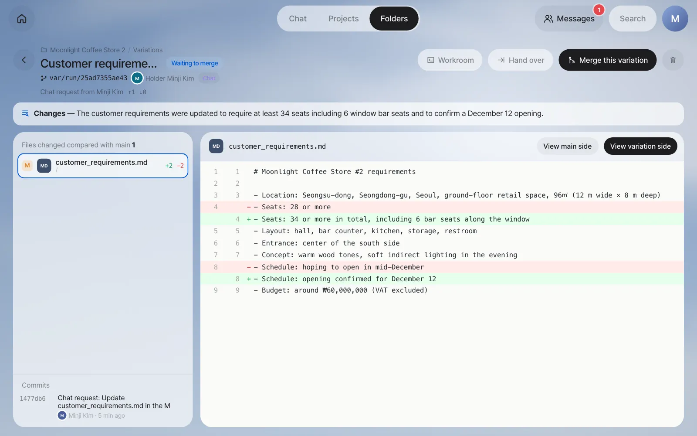
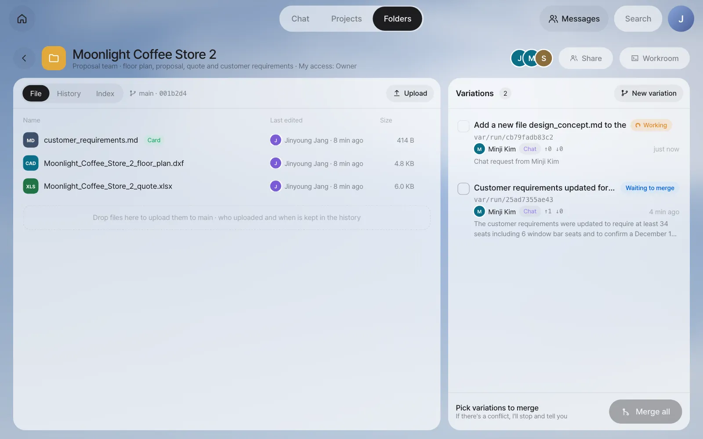
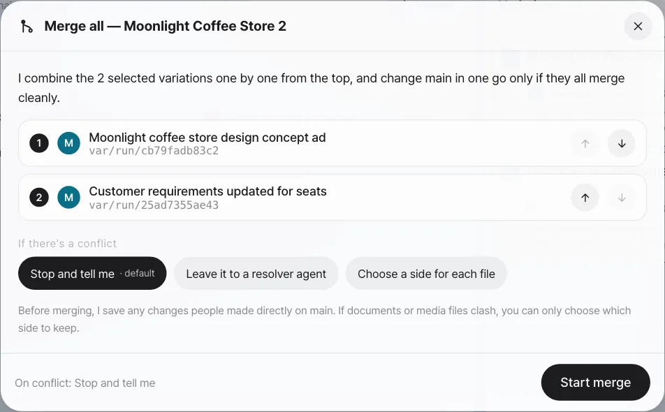
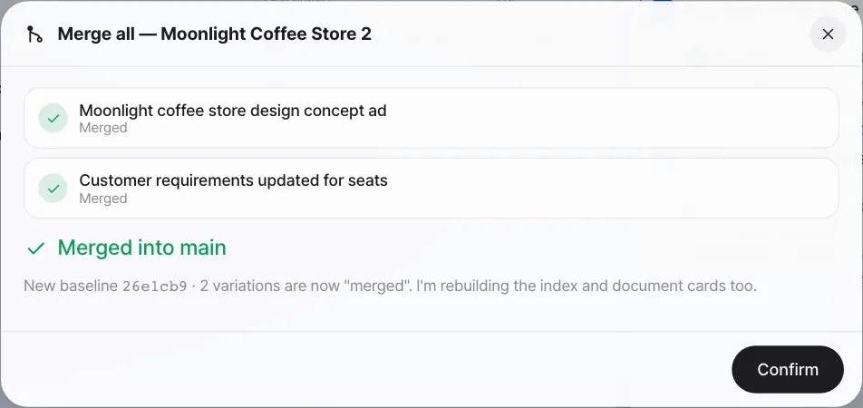
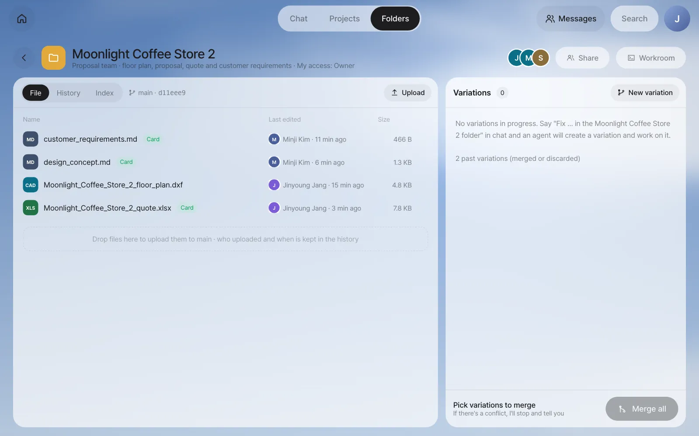
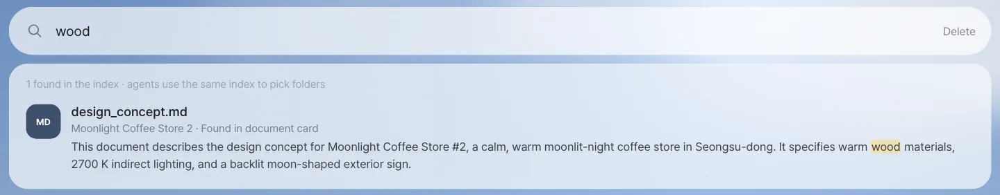
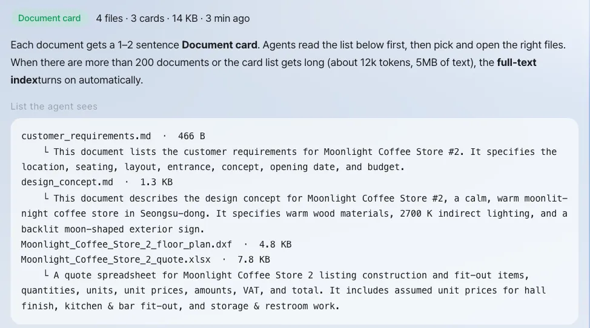

Gather Moonlight Coffee Store #2's floor plan, quote and requirements in a team folder, and bring in Minji Kim and Seoyeon Park as members. When the assistant edits a document in the folder, it leaves the original (main) alone and works in a variation, and team lead Jinyoung Jang merges only the variations she picks, all at once.
Why shared folders#
So far, outputs have lived inside each person's chat. The floor plan and quote the assistant made in Chapter 9 are only in team lead Jinyoung Jang's chat. Just as the panel app data in Chapter 12 was kept as a single copy in a shared folder, once you start working as a team, your files need three things too.
- One place for everything — Keep one customer's materials (floor plan, quote, requirements notes) in one folder, like a drive.
- Who can do what — The designer can edit; Finance can only view.
- Combining edits safely — Neither people nor the assistant overwrite the original directly. They make an edited version separately, and a person picks what to merge.
Inside, a Lite shared folder is a git repository. That's why every edit stays in the history, and you can compare edited versions (variations) side by side and pick which to combine. You don't need to know git. On screen, you only need to look at "main" and "variations."
| Term | Meaning |
|---|---|
| main | The latest version the team currently trusts. What you see in the file list is main |
| Variation | An edited version that branched off from main. When the assistant edits a folder document, it always works in a variation |
| Merge all | Combines the selected variations one by one and changes main in one go. If even one clashes, it stops and main stays as it was |
| Index | Makes a one- or two-sentence summary (document card) for each document in the folder, used when people and AI (the assistant and agents) search |
Try it 1 — make a folder and upload materials#
Do this from team lead Jinyoung Jang's account.
- Click the Folders tab at the top, then click New folder.
- Enter the name
Moonlight Coffee Store 2and the descriptionProposal team · floor plan, proposal, quote and customer requirements, then click Create.

- When the folder opens, upload files with Upload. You can also drag files onto the folder screen. Upload
Moonlight Coffee Store 2 floor plan.dxfandMoonlight Coffee Store 2 quote.xlsxfrom Chapter 9, pluscustomer_requirements.md, which sums up the email (in the screenshots, the spaces in the file names were replaced with underscores when uploading).
Here's what's in customer_requirements.md. Make it in a text editor and upload it.
# Moonlight Coffee Store #2 requirements
- Location: Seongsu-dong, Seongdong-gu, Seoul, ground-floor retail space, 96㎡ (12 m wide × 8 m deep)
- Seats: 28 or more
- Layout: hall, bar counter, kitchen, storage, restroom
- Entrance: center of the south side
- Concept: warm wood tones, soft indirect lighting in the evening
- Schedule: hoping to open in mid-December
- Budget: around ₩60,000,000 (VAT excluded)
Check: The uploaded files appear in the file list, and Last edited shows who uploaded them and when. After a moment, a green Card mark appears next to each document (the index). The floor plan drawing (.dxf) isn't a document, so it doesn't get one.
Try it 2 — members and access#
Click Share in the folder header, pick teammates and access levels under Invite, and click Invite.
| Access | What they can do | In this exercise |
|---|---|---|
| Owner | Manage members and the folder, merge | Jinyoung Jang |
| Edit | Upload to main, merge variations | Minji Kim |
| Run | Create variations, run agents | — |
| View | View and download | Seoyeon Park |

Access widens in the order View ⊂ Run ⊂ Edit ⊂ Owner. Seoyeon Park (View) can open and download files but can't upload or create variations.
Try it 3 — have the assistant edit a folder document#
Minji Kim wants to add what she heard on a call with the owner of Moonlight Coffee to the requirements. In the chat on Minji Kim's account, she asks, including the folder name and file name.
Update customer_requirements.md in the Moonlight Coffee Store 2 folder with what the owner said on the phone: put 6 bar seats along the window, make it 34 seats or more in total, and the opening is confirmed for December 12.
The assistant finds the folder, makes a variation, and edits only inside it. In our run it took about a minute and a half. The chat gets a summary of the edits along with a Moonlight Coffee Store 2 · New variation card. Click the card, and a screen comparing it with main opens.

Check
- In the Variations list on the right side of the folder, the new variation shows as Waiting to merge. The holder is Minji Kim, and the source is Chat.
customer_requirements.mdin the file list (main) is still exactly as it was.
Minji Kim asks for one more thing the same way (Add a new file design_concept.md to the Moonlight Coffee Store 2 folder. Content: warm wood tones (natural oak with walnut accents), 2700K indirect lighting…). Another variation appears.

When a chat request works in a folder
A chat request works in a folder when it names a folder you're a member of and asks for a change: add, update, fix, edit, write and similar words. In the current version, "make a new file …" isn't recognized as a folder edit (in our run the assistant only answered as if it had made the file), so say "add a new file …". Variations made this way also don't change main until a person merges them.
Try it 4 — merge only the variations you pick#
Open the folder from team lead Jinyoung Jang's account.
- Click the checkbox to the left of each variation you want to merge. Pick Minji Kim's two variations.
- Click Merge all at the bottom. A window opens where you pick the merge order and what to do if there's a conflict.

| If there's a conflict | What happens |
|---|---|
| Stop and tell me (default) | Shows the clashing files and lines and stops. main stays as it was |
| Leave it to a resolver agent | An agent reads both sides and makes a combined version |
| Choose a side for each file | For each file, you pick either the main side or the variation side. Documents like Hangul and Excel files, and pictures, can't be combined line by line, so only this option works for them |
- Click Start merge.

Check: design_concept.md appears in the file list, and Last edited for customer_requirements.md changes to Minji Kim. In the History tab, you can see who merged what and when. Merged variations fold into past variations.

Try it 5 — find things with the index#
Type wood in the search box at the top of the folder list screen.

The index moves up a level as the folder grows.
| Level | When | What it searches |
|---|---|---|
| File list | Always | Folder names, file paths |
| Document cards | For each document (when it's uploaded or merged) | One- or two-sentence summaries and keywords |
| Full-text index | Automatically, when there are more than 200 documents or the card summaries and text get large (cards about 12k tokens, text 5MB) | Document text |
In the folder's Index tab, you can see exactly the list the agent sees (files and card summaries).

More to try#
| Feature | Where |
|---|---|
| Hand a variation over to a person or agent | Hand over on the variation screen — take it over as is, or start a new branch from this point |
| Edit a variation yourself | Workroom on the variation screen — files and a terminal (Chapter 23) |
| Discard a variation | The trash can at the top right of the variation screen — discarded variations are kept for the retention period |
| Connect an existing git repository | Connect repository in the folder list — it shows the list without changing what's in the repository |
In the next chapter, you'll see the step before putting things in a folder: sharing and @mentions, which hand a chat output straight to one teammate (Chapter 14).
Check your understanding
- Open the folder from Seoyeon Park's account. Do you see Upload and New variation? Why or why not?
- If team lead Jinyoung Jang edited the same line directly in main and uploaded it before one of Minji Kim's variations was merged, what happens when you merge with Stop and tell me?
- If you type
VATin the folder search, which file comes up? Where in that file was it found?
Answer
- You don't. Seoyeon Park has View access, so she can only open and download. Uploading needs Edit or higher, and creating variations needs Run or higher.
- That file has a conflict and the merge stops. It shows which line of which file was edited differently on each side, and main stays as it was. You can stop there, pick a side, or leave it to a resolver agent.
Moonlight Coffee Store 2 quote.xlsxcomes up. The Excel file's name doesn't contain "VAT," but it was found in its document card summary ("…quantities, units, unit prices, amounts, VAT, and total").